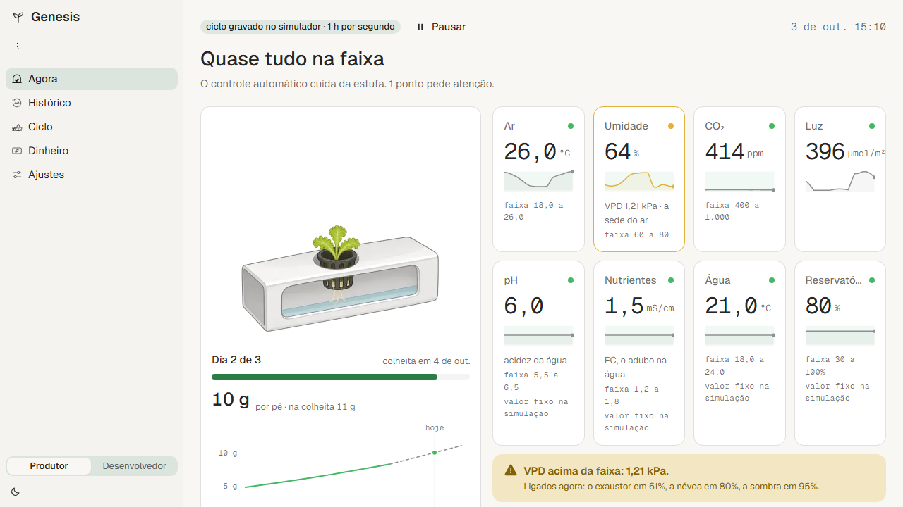
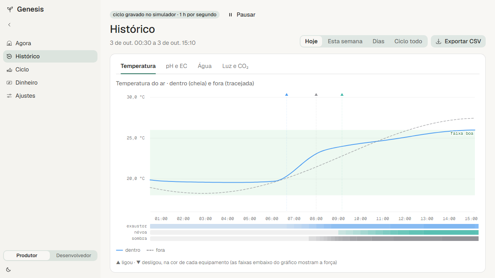
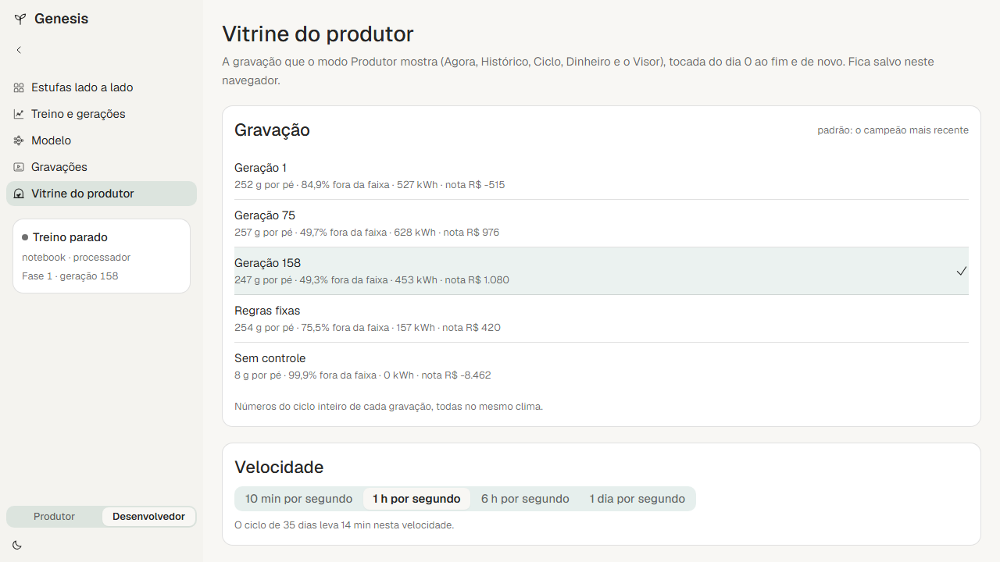

O Produtor alimentado por uma gravação real
O "ao vivo" do modo Produtor deixou de ser inventado. Agora o Agora, o Histórico, o Ciclo, o Dinheiro e o Visor mostram a reprodução de uma gravação real do treino: um campeão cultivando 35 dias no simulador, tocado acelerado e em ciclo. Qual gravação, e em que velocidade, o Desenvolvedor escolhe numa página nova, a Vitrine do produtor. Junto vieram as mudanças do Agora, do Histórico e do Ciclo pedidas pelo Gabriel.
Antes e depois




Todas as capturas: docs/revisao-visual/passo-10/.
O que foi feito
- Adaptador novo
estufa/infrastructure/reproducao/: implementa as portasFonteEstufaeControleSimulacaotocando as gravações num relógio só. Ligado emapp/dependencias.ts. Saíram oestufas.jsoninventado e o script que o gerava. - Vitrine do produtor (
/dev/vitrine): escolhe a gravação e a velocidade; fica emusePreferencias. - Agora: o bloco "Agente × regras fixas" virou Colheita (em quantos dias, a data, a massa por pé e o total em kg nos 1.000 pés). Os gráficos das 24 h ficaram mais altos (300 px por gráfico; pH e EC, cada um com a altura inteira) e ganharam as marcas de liga/desliga.
- Histórico: o ciclo inteiro com filtro de período, o histórico de alertas (que estava no Ciclo) e o CSV do período escolhido.
- Ciclo: só a alface dia a dia e a curva, agora a massa real da gravação.
- Visor: o relógio da reprodução e "na colheita X g" no lugar da meta inventada.
- Linguagem: "o agente" virou "o controle automático"; os alertas contam só o que está gravado (antes inventavam intenção: "espera a leitura se confirmar"); o selo "exemplo" virou "valor fixo na simulação".
- Dados de exemplo (
npm run demoe testes): um recorte real de 3 dias da execução fase1-semente9-20261124 (g1, g75, g158, regras fixas e sem controle), gerado porscripts/gerar-dados-exemplo.mjs.
Por quê
A decisão grande está em docs/decisoes/0007. Ser alimentado por uma gravação, a Vitrine, a escolha guardada no navegador e não no banco, e "nenhum número inventado" foram decisões do Gabriel. As de implementação:
O Gabriel propôs duas opções: "quantos dias faltam para colher e o peso esperado por pé" ou "o gasto de energia e água do dia". Escolhi a colheita: é a primeira pergunta de quem cultiva (quando colho e quanto vou ter para vender), e o gasto já tem lugar no Dinheiro. O card mostra também o total em kg (massa × 1.000 pés), uma conta direta que o produtor faz de cabeça. A massa é a que a gravação mediu no dia 35.
A rede decide de 0 a 1, não liga/desliga. "Ligou" é passar de 10%; "desligou" é cair abaixo de 5%. A folga entre os dois (histerese) evita marcar ruído. Medi antes de escolher: no dia 20 do campeão g158 isso dá ~2 trocas por equipamento; nas regras fixas, que são liga/desliga de verdade, 16 a 34.
O ciclo de 35 dias passa em 14 minutos: o bastante para uma apresentação ver a alface crescer e o gráfico de 24 h andar sem virar borrão. As outras: 10 min/s (dá para acompanhar ação por ação), 6 h/s (2,3 min por ciclo) e 1 dia/s (35 s).
Ela mostrava "Estufa 1 · agente", "PID", "Regras fixas". Agora o Produtor tem uma estufa só, a da Vitrine, e o jargão some.
Números
| O que | Valor | Fonte |
|---|---|---|
| Gravação inteira (5.040 passos) | ~3 MB; 272 KB pela rede | medido com curl --compressed: o Storage do Supabase entrega em brotli |
| Recorte de exemplo (5 gravações × 432 passos + treino.json) | 1,22 MB | ls da pasta dadosExemplo (os dados inventados de antes somavam 2,2 MB) |
| Testes unitários | 76 passando | npm test (o adaptador novo tem 5) |
| Testes e2e | 28 passando | npm run e2e, inclui a Vitrine mudando o Produtor e a escolha sobrevivendo a recarregar |
| Produção (Supabase) | Agora no dia 0 de 35, 5 g agora, 247 g na colheita | build com o .env.local e o navegador de teste |
O que deu errado ou surpreendeu
143,999 passos não são 144. O relógio soma 0,6 passo a cada 100 ms; somado 240 vezes, o ponto flutuante dá 143,9999 e o dia 1 virava 0,993. O teste pegou; a posição agora é arredondada em 6 casas a cada quadro.
Erros 400 no console em produção. O app pedia indice.json, que as execuções antigas não têm (só a reavaliação mandou índice). Agora ele lista o que existe no bucket antes de pedir.
Um risco escondido no envio. Reenviar a pasta antiga do treino (treino/saidas/<execucao>) trocaria as gravações completas da reavaliação pelas antigas, sem massa. O treino/nuvem.py agora pula as gravações que a reavaliação já mandou (com teste).
O selo "exemplo" era cortado no card estreito de Nutrientes e Água. Virou uma linha embaixo: "valor fixo na simulação".
Como reproduzir
cd dashboard
node scripts/gerar-dados-exemplo.mjs # o recorte real (precisa de treino/saidas e treino/reavaliacoes)
npm run typecheck && npm run lint && npm run format:check
npm test
npm run e2e
npm run demo # o app com o recorte, sem internet
MSYS_NO_PATHCONV=1 CAPTURAS=passo-10 ROTAS="/,/historico,/ciclo,/dev/vitrine,/visor" npx playwright test capturas -g lightEm aberto
- Passo 11: o Dinheiro repaginado (a conta em linguagem simples e os lançamentos reais).
- Passo 12: Estufas lado a lado com escolha de quais aparecem (hoje carrega todas as gravações).
- O cabeçalho do Agora no celular quebra em três linhas (selo, pausar, data): fica para a revisão visual (passo 13).
- O Supabase mostra só a execução mais recente (semente 9). Escolher a execução na Vitrine é um passo futuro.
Links
- Decisão: 0007. Contrato: docs/contrato-dados.md (
Estufa.massaPorDia, eventos sem "perturbação", as portas). - Código:
dashboard/src/modules/estufa/infrastructure/reproducao/,dashboard/src/app/dependencias.ts,dashboard/src/app/composicoes/PaginaVitrine.tsx,PaginaAgora.tsx,PaginaHistorico.tsx,PaginaCiclo.tsx,series.ts(ligaDesliga),shared/design-system/graficos/GraficoSerie.tsx(marcas e amostragem).